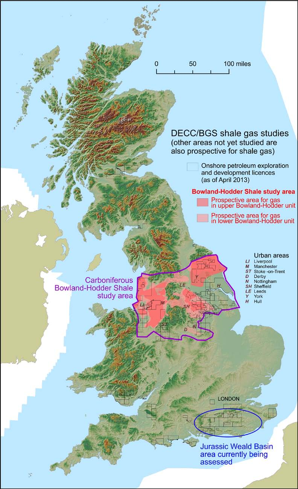

Bowland Basin
Table of Contents
- a key part of the Pennine Carboniferous Petroluem System
- the Bowland Basin is a Carboniferous Petroleum System with an estimated TOGIP of 1300 TCF Andrews2013
- the pay region is over 6000 ft thick and naturally fractured Clarke2014
- the Bowland Basin is a mixed clastic-carbonate succession Clarke2014
- the main lithologies are high and low-silt mudstones with occasional clay-rich mixed mudstones, and occasional thin sandstones and dolomitized limestones Clarke2014
- the lithology, being an important control on TOC, high TOC shales aer near the clastic line indicating the probable influence of clastic input on organic carbon deposition Clarke2014
- the stress regime in the Bowland Basin is strike-slip with \(S_{hmax}>S_v>S_{hmin}\), as determined from drilling induced tensile fractures with an azimuth of \(353-173 ^0C\) Clarke2014
- the TOC in Bowland basin varies from 1 to 7 % with an average value of 2.65% Clarke2014
- Petrographic analysis revealed significant amounts of type III kerogen Clarke2014
- Effective porosity averages 2.8%, and water saturation averages 25% Clarke2014
- Average matrix permeability is \(1e{-5} md\). Clarke2014
- Gas Density in the pay region is about 732 MMSCF/Section/meter, with adsorbed gas accounting for about 20% of the TOGIP. Reservoir temperature was about \(57 ^0C\), and reservoir pressure was about \(22.4 MPa\) Clarke2014
- Facies in the Bowland Basin and corresponding mineral composition in wt% Fauchille2017
 Andrews2013
- for the purposes of resource estimation the Bowland-Hodder unit was divided into two
- upper bowland
- lower bowland
1 Millstone Grit
- an younger shale above the Bowland-Hodder unit
- potential units such as the Arnsbergian-Kinderscoutian Sabden Shale in Lancashire and Holywell Shales in Wales occur within Millstone Grit sandstone sequences Andrews2013
2 Upper Bowland
- considered more prospective for hydrocarbon exploration as there's more exploration data available for this basin Andrews2013
- Andrews2013 privided a bottom-up estimate of Total Gas Initially in Place (TGIIP) of 164-264-446 tcf (4.6-7.5-12.7 tcm) (P90-P50-P10)
- post-rift unit; laterally contiguous; organic-rich; condensed zones can be mapped
3 Lower Bowland
- syn-rift unit; thousands of feet thick in fault bounded basins; shale is interbedded with mass flow clastic sediments and redeposited carbonates
- Andrews2013 provided a bottom-up estimate TGIIP of 658-1065-1835 tcf (18.6-30.51.9 tcm) (P90-P50-P10) for the lower Bowland unit
- largely unexplored - lateral extent of organic rich shales are not clear at the moment
4 Hodder Mudstone
5 Characteristics of Bowland Shales
| criteria | characteristics | reference |
| kerogen type | type II and type III | Andrews2013 |
| kerogen type | type II | Clarke2014 |
| hydrogen index | ||
| mineralogy | medium/high clay content Andrews2013 | |
| net thickness | upper bowland - 200-3000 ft | Andrews2013 |
| net thickness | lower bowland - upto 10,000 ft | Andrews2013 |
| thermal maturity | ||
| gas content | ||
| depth | ||
| porosity | ||
| overpressure |
6 Shale Facies in Bowland Formation
| Facies | Depth | Kaolinite | Quartz | Calcite | Ankerite | Pyrite | Muscovite | Albite | TOC |
|---|---|---|---|---|---|---|---|---|---|
| Unlaminated quartz rich | 2073.34 | 0 | 58 | 15 | 13 | 2 | 9 | 3 | 1.4 |
| Transition un- to inter-laminated quartz rich | 2081.27 | 5 | 53 | 17 | 1 | 8 | 11 | 5 | 4.1 |
| Unlaminated quartz rich | 2089.83 | 5 | 65 | 4 | 5 | 4 | 11 | 6 | 1.7 |
| Interlaminated quartz rich | 2091.69 | 6 | 56 | 12 | 6 | 6 | 10 | 4 | 3.2 |
| Unlaminated quartz rich | 2344.70 | 7 | 71 | 6 | 2 | 1 | 10 | 3 | 6.1 |
| Interlaminated quartz rich | 2488.64 | 3 | 68 | 10 | 3 | 2 | 10 | 4 | 1.5 |
| Laminated quartz rich | 2495.27 | 18 | 52 | 3 | 11 | 2 | 5 | 9 | 1.1 |
| Unlaminated quartz rich | 2496.92 | 6 | 52 | 21 | 3 | 5 | 9 | 4 | 2.1 |
| Unlaminated quartz rich | 2500.49 | 5 | 56 | 18 | 1 | 5 | 10 | 5 | 2.0 |
- Preese Hall-1 shale gas discovery well
| Sample No | Depth (ft) | Strat unit | Quartz | Feldspar | Calcit | Dolomite | Ferroan carbonate | Illite/mica | Chlorite | Kaolinite | Pyrite | Apatite | TOC |
| B53 | 5269 | MG U | 39.2 | 4.6 | 0 | 0 | 0 | 37.6 | 2.6 | 11.6 | 1.4 | 0 | 1.02 |
| AT1 | 5889.71 | MG L | 12 | 4.9 | 0 | 0 | 0 | 38.6 | 3.2 | 41.3 | 0 | 0 | 5.99 |
| AT9 | 6837.8 | UBS U | 34.6 | 2.6 | 2.2 | 0 | 2 | 21.8 | 0 | 2.4 | 4.3 | 30.1 | 4.73 |
| A153 | 7803.5 | HM 8 PDSL | 30.4 | 3.3 | 2.7 | 1.9 | 1.1 | 31.8 | 5.6 | 21.1 | 2.1 | 0 | 1.6 |
| AA94 | 8160.63 | UBS L | 20.6 | 0.4 | 58.4 | 0 | 19.6 | 1.1 | 0 | 0 | 0 | 0 | 0.36 |
| AA114 | 8510.38 | LBS U | 54.5 | 4.9 | 2.8 | 0 | 3.9 | 22.1 | 0 | 7.5 | 4.3 | 0 | 7.04 |
| AA83A | 8895.21 | LBS L | 5.1 | 0 | 13.8 | 57.9 | 16.1 | 5.4 | 0 | 0.9 | 0.8 | 0 | 0.77 |